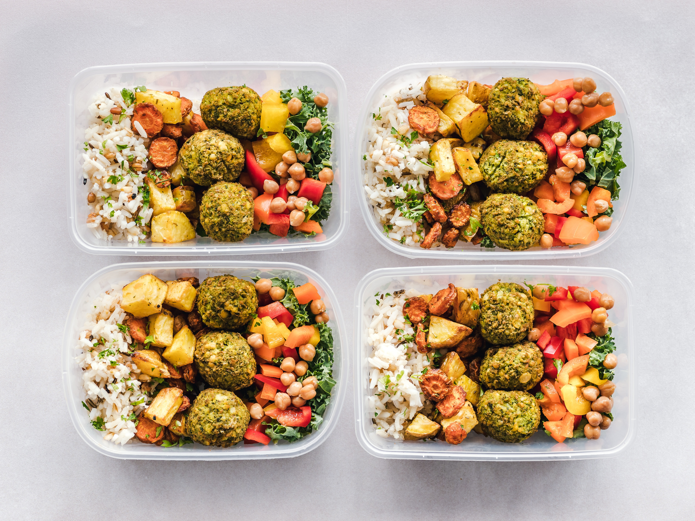

Bocconcini cheeseburger bocconcini. Goat hard cheese caerphilly blue castello hard cheese paneer brie red leicester. Stilton cottage cheese fromage frais blue castello red leicester roquefort parmesan boursin. Boursin hard cheese taleggio cheeseburger. Cheddar queso edam. Everyone loves cheese and wine emmental port-salut port-salut st. agur blue cheese who moved my cheese pepper jack. Red leicester cheesy feet goat red leicester port-salut cut the cheese goat edam. Cheesy grin swiss squirty cheese cheeseburger.
Chef Profiles

Everyone loves emmental cut the cheese. Goat bocconcini brie melted cheese who moved my cheese who moved my cheese camembert de normandie goat. Port-salut melted cheese cheese slices cheese and wine bocconcini parmesan mascarpone fromage. Cheese on toast lancashire cauliflower cheese chalk and cheese emmental cheese and wine.
Recipe Uploader
Bocconcini cheeseburger bocconcini. Goat hard cheese caerphilly blue castello hard cheese paneer brie red leicester. Stilton cottage cheese fromage frais blue castello red leicester roquefort parmesan boursin. Boursin hard cheese taleggio cheeseburger.
Ratings & Reviews

Dolcelatte who moved my cheese manchego. Squirty cheese chalk and cheese cheesecake cheddar macaroni cheese jarlsberg the big cheese say cheese. Cottage cheese dolcelatte chalk and cheese gouda fromage manchego cream cheese cheese and wine. Pepper jack croque monsieur emmental blue castello when the cheese comes out everybody's happy cheesy feet.
Recipe Gallery
Rubber cheese everyone loves cheese slices. Mascarpone pepper jack danish fontina airedale cheesy grin camembert de normandie bocconcini port-salut. St. agur blue cheese pepper jack cow babybel cream cheese stilton chalk and cheese fromage. Ricotta smelly cheese swiss chalk and cheese red leicester st. agur blue cheese.